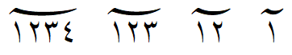

Signs Spanning Numbers
Some characters in Arabic script are signs that span (or enclose) numbers. Over time these have been variously called:
- prepended concatenation marks
- subtending marks
- prefixed format control characters
For the purposes of this document, we will use the term spanning signs (or more simply, signs) to refer to these characters and sign glyphs for the glyphs within the font that will represent them.
Since digit choice is dependent on regional use, these marks may be used with European digits (U+0030..U+0039), ARABIC-INDIC digits (U+0660..U+0669) or with EXTENDED ARABIC-INDIC digits (U+06F0..U+06F9).
From a practical standpoint there isn't a need to support an arbitrary-length sequence of digits. For SIL fonts, we have found the maximum number of digits as documented in the following table to be sufficient for most uses.
Examples of how these are formatted are shown below using varying number of digits with hamza used as a separator.
| Characters | Glyph | max # digits |
|---|---|---|
| 0600 ARABIC NUMBER SIGN | ء١ء١٢ء١٢٣ء | 3 |
| 0601 ARABIC SIGN SANAH (year sign) | ء١ء١٢ء١٢٣ء١٢٣٤ء | 4 |
| 0602 ARABIC FOOTNOTE MARKER | ء١ء١٢ء | 2 |
| 0603 ARABIC SIGN SAFHA | ء١ء١٢ء١٢٣ء١٢٣٤ء | 4 |
| 0604 ARABIC SIGN SAMVAT | ء١ء١٢ء١٢٣ء١٢٣٤ء | 4 |
| 0605 ARABIC NUMBER MARK ABOVE | ء١ء١٢ء١٢٣ء١٢٣٤ء | 4 |
| 0890 ARABIC POUND MARK ABOVE | ء١ء١٢ء١٢٣ء١٢٣٤ء | 4 |
| 0891 ARABIC PIASTRE MARK ABOVE | ء١ء١٢ء١٢٣ء١٢٣٤ء | 4 |
| 06DD ARABIC END OF AYAH | ء١ء١٢ء١٢٣ء | 3 |
| 08E2 ARABIC DISPUTED END OF AYAH | ء١ء١٢ء١٢٣ء | 3 |
For more Unicode information about these characters, see Signs Spanning Numbers in Section 9.2 and Prepended Concatenation Marks in Section 23.2 of The Unicode Standard.
Historical complications:
Due to Unicode history, the OpenType font logic for such spanning signs is slightly more complex than it otherwise would be. For details of the problem see this proposal, but in essence:
- Prior to Unicode 5.1 the spanning signs could end up in a different directional run from the digits that followed, in some cases making the order appear backwards (visually the digits were left of the sign) and font implementation difficult.
- Starting in Unicode 5.1 the spanning signs were changed from Bidirectional_Class=AL to AN. This has the effect of putting the sign and the digit sequence in the same directional run, making them easier to implement correctly.
The upshot of this is that even today various implementations work differently, and as a result the logic inside fonts has to be smart enough to work with either order, i.e. when the sign precedes digits or when it follows digits.
As a further result of these variations, OpenType font logic cannot use either mark attachment or cursive attachment lookups to reliably position digits upon spanning signs – the only reliable way we’ve found is through contextual single adjustment lookups.
SIL Implementation
NB: Some of the information and basic OpenType techniques described hearin were learned by studying the Amiri font feature code.
Digit design
The normal glyphs for digits are too large to be displayed with spanning signs, so we have smaller versions of all numeric digits that are to be so used. In fact for most of our fonts we have two smaller sizes of digits:
- Medium digits are used in all cases for most of the spanning signs.
- Small digits are used
- for the Disputed End of Ayah sign or
- if there are 3 digits to be enclosed in an End of Ayah, thus allowing the End of Ayah to retain the same shape no matter whether there are 1, 2 or 3 digits following it.
The exceptions to the need for two smaller sizes are Alkalami and Ruwudu fonts. These use different widths of End of Ayah for different numbers of digits, and thus these fonts require only one smaller size of digits.
Because of the need to visually center the digits within End of Ayah, we utilize mono-width designs for all medium and small digits.
In summary: for all three sets of digits (European digits, ARABIC-INDIC digits and with EXTENDED ARABIC-INDIC digits) and any language specific variants of those digits, we need one (or possibly two) sets of smaller digit glyphs. Within each of those sets, all digits must have the same width.
Spanning sign design
For reference, here are the spanning signs, the default glyph name used in SIL fonts, and a repeat of the number of digits we want to support:
| Spanning Sign | SIL default glyph name | Max # digits |
|---|---|---|
| U+0600 ARABIC NUMBER SIGN | number-ar | 3 |
| U+0601 ARABIC SIGN SANAH | year-ar | 4 |
| U+0602 ARABIC FOOTNOTE MARKER | footnotemarker-ar | 2 |
| U+0603 ARABIC SIGN SAFHA | pagenumber-ar | 4 |
| U+0604 ARABIC SIGN SAMVAT | samvat-ar | 4 |
| U+0605 ARABIC NUMBER MARK ABOVE | numbermark-ar | 4 |
| U+06DD ARABIC END OF AYAH | endofayah-ar | 3 |
| U+0890 ARABIC POUND MARK ABOVE | poundmarkabove-ar | 4 |
| U+0891 ARABIC PIASTRE MARK ABOVE | piastremarkabove-ar | 4 |
| U+08E2 ARABIC DISPUTED END OF AYAH | endofayahdisputed-ar | 3 |
Here is an example using the U+065 Number Mark Above:

We use .2, .3, and .4 suffixes on sign glyph names to indicate how many digits a given glyph is designed to take. For example:
numbermark-aris designed for one digitnumbermark-ar.2is designed for two digitsnumbermark-ar.3is designed for three digits
etc.
One thing this does for in our workflow is automatically create some potentially useful FEA classes:
c_2class of all glyphs with.2extensioncno_2corresponding class of glyphs without the.2extensionc_3class of all glyphs with.3extensioncno_3corresponding class of glyphs without the.3extension
etc.
Anchors
Anchors are defined to help position the digits to the spanning signs:
- Digit glyphs have
digitL(left side) anddigitR(right side) anchors at the baseline to attach each digit to the previous one - Sign glyphs contain just the
digitRanchor to define where the left-most of the digit sequence should be positioned
As mentioned above, in most of our fonts the End of Ayah glyph doesn’t change width like the other spanning signs, but multiple glyph variants are still needed. This is because the position of the first digit depends on how many digits there are. This is further complicated in some of our fonts by the fact that the 1- and 2-digit versions of the glyph use the medium size digits, while the 3-digit version uses the small size digits in order to fit all of them in:
Font logic
For simplicity, code snippets below implement just 4 spanning signs:
numbermark-arat most 4 digitsnumber-arat most 3 digitsendofayah-arat most 3 digitsfootnotemarker-arat most 2 digits
Both substitution and positioning rules are needed:
- Substitute the correct spanning sign glyph based on how many digits follow
- Substitute the medium or small digit glyphs for the normal-sized digit glyphs
- Adjust position of digits by attaching or aligning
digitLtodigitRanchors
Graphite logic
The graphite rules are relatively straightforward attachments using the digitL and digitR anchors, but of course have to be done in both orders. Details are left to the reader.
OpenType logic
It would be nice if we could use anchor or cursive attachment rules (GPOS lookup types 4 or 3) for positioning digits on spanning signs but this doesn't work — at least it can only work in one of the needed orders. Rather than any attachment rules, we use FEAX to construct the adjustment rules to kern the digits to the correct position on the spanning signs.
OpenType substitutions
Substituting the correct sign glyph (based on how many digits follow) and substituting the correct size digits (medium or small) can be done in a single contextual rule.
We start by making utility lookups that replace the spanning sign glyphs:
lookup _signWith_4digits { # Replace spanning signs with 4-digit variant
lookupflag IgnoreMarks ;
sub @cno_4 by @c_4 ;
} _signWith_4digits ;
lookup _signWith_3digits { # Replace spanning signs with 3-digit variant
lookupflag IgnoreMarks ;
sub @cno_3 by @c_3 ;
} _signWith_3digits ;
lookup _signWith_2digits { # Replace spanning signs with 2-digit variant
lookupflag IgnoreMarks ;
sub @cno_2 by @c_2 ;
} _signWith_2digits ;noting that we don't need a lookup for the 1-digit case because the default glyph for each spanning sign is constructed to handle the 1-digit case.
Then we add utility lookups to substitute the digits:
lookup _signDigits_ToMedium { # replace digits with medium
lookupflag IgnoreMarks ;
sub @DigitsAny by @DigitsAnyMedium ;
} _signDigits_ToMedium ;
lookup _signDigits_ToSmall { # replace digits with small
lookupflag IgnoreMarks ;
sub @DigitsAny by @DigitsAnysmall ;
} _signDigits_ToSmall ;And now, remembering that we have to handle different numbers of digits in both orders, we write contextual substitution rules that reference the utility lookups.
lookup SignWithDigits {
lookupflag IgnoreMarks ;
# Uniscribe or HarfBuzz 'latn' order: sign is before the digits
# Handle spanning sign followed by 4 medium digits
sub @c_4' lookup _signWith_4digits
@DigitsAny' lookup _signDigits_ToMedium
@DigitsAny' lookup _signDigits_ToMedium
@DigitsAny' lookup _signDigits_ToMedium
@DigitsAny' lookup _signDigits_ToMedium ;
# Handle spanning sign (other than End of Ayah) followed by 3 medium digits
# class of sign glyphs has to be written out explicity because
# End of Ayah with 3 digits takes small digits.
# Note that footnotemarker-ar takes a max of 2 digits so also isn't included
sub [ numbermark-ar number-ar ]' lookup _signWith_3digits
@DigitsAny' lookup _signDigits_ToMedium
@DigitsAny' lookup _signDigits_ToMedium
@DigitsAny' lookup _signDigits_ToMedium ;
# Handle End of Ayah followed by 3 small digits
sub endofayah-ar' lookup _signWith_3digits
@DigitsAny' lookup _signDigits_ToSmall
@DigitsAny' lookup _signDigits_ToSmall
@DigitsAny' lookup _signDigits_ToSmall ;
# Handle spanning sign followed by 2 medium digits
sub @c_2' lookup _signWith_2digits
@DigitsAny' lookup _signDigits_ToMedium
@DigitsAny' lookup _signDigits_ToMedium ;
# Handle spanning sign followed by 1 medium digit
sub @cno_2
@DigitsAny' lookup _signDigits_ToMedium ;
# HarfBuzz 'arab' order: sign is after the digits
# Handle 4 medium digits followed by spanning sign
sub @DigitsAny' lookup _signDigits_ToMedium
@DigitsAny' lookup _signDigits_ToMedium
@DigitsAny' lookup _signDigits_ToMedium
@DigitsAny' lookup _signDigits_ToMedium
@c_4' lookup _signWith_4digits ;
# Handle 3 medium digits followed by spanning sign other than End of Ayah
sub @DigitsAny' lookup _signDigits_ToMedium
@DigitsAny' lookup _signDigits_ToMedium
@DigitsAny' lookup _signDigits_ToMedium
[ numbermark-ar number-ar ]' lookup _signWith_3digits ;
# Handle 3 small digits followed by End of Ayah
sub @DigitsAny' lookup _signDigits_ToSmall
@DigitsAny' lookup _signDigits_ToSmall
@DigitsAny' lookup _signDigits_ToSmall
endofayah-ar' lookup _signWith_3digits ;
# Handle 2 medium digits followed by spanning sign
sub @DigitsAny' lookup _signDigits_ToMedium
@DigitsAny' lookup _signDigits_ToMedium
@c_2' lookup _signWith_2digits ;
# Handle 1 medium digit followed by spanning sign
sub @DigitsAny' lookup _signDigits_ToMedium
@cno_2 ;
} SignWithDigits ;OpenType positioning
Some assumptions:
- for all the digits, the
digitLanddigitRAPs are positioned at the same height and exactly on the sidebearings (this simplifies the math somewhat). - all the medium digits have the same width and anchors, and similarly for the small digits if used. This means it doesn't matter which particular medium digit or small digit we use for calculations — we've chosen
zero.mediumandzero.small - in our FEAX code, we let:
mrepresent the spanning sign glyphwrepresent the the negative of the width of the digits, which can be calculated in FEAX using, for example:
let w = -ADVx("zero.medium") ;
(For more information about the extensions of the FEA syntax used in this code, see fea extensions do statement.)
We do not assume that the spanning signs have their digitR anchors at the same height as the anchors of the digits, so we'll calculate a vertical kerning as well.
For the first example, we'll use a 3-digit sequence:
Step one is to align first digit's digitL anchor with the sign glyph's digitR. To do this, calculate the offsets (x and y) from the digit's starting position to where we want it positioned. The first digit's starting position will be on the baseline immediately to the right of the spanning sign glyph, in other words the digit's left sidebearing will align with the spanning sign's right sidebearing.
The amount the digit needs to be moved vertically to align its anchor to that of the spanning sign is the difference in the y coordinates of the anchors. In FEAX we can calculate that using:
let y = APy(m, "digitR") - APy("zero.medium", "digitL");Horizontally we need to left-kern that first digit a distance equal to the width of the spanning sign minus the x-coordinate of the spanning sign's digitR anchor. Since a left-kern is negative, in FEAX we calculate the value and save it in a variable x1 by:
let x1 = APx(m, "digitR") - ADVx(m);At the same time we kern the first digit, we want to remove its advancewidth. Thus we start out our contextual kerning rule using:
pos $m @DigitsAnyMedium' <$x1 $y $w 0> @DigitsAnyMedium' @DigitsAnyMedium' DigitsAnyMedium';(For refresher on the <...> value record, see Value record format B in the Adobe FEA specification.)
Considering the second digit, we want to move it from its starting position to a position immediately right of the first digit. Again we need to know the starting position of the second digit and this may surprise the reader. Because we removed the advance width of the first digit when we kerned it, the starting position of the second digit is the same as that of the first digit (before we moved it): immediately right of the spanning sign glyph. The kern distance for the second digit is, therefore, the same as that of the first but to the right by the width of the first digit. Because w is negative, we calculate the second digit's kern in FEAX as:
let x2 = x1 - w;We can now add kerning for the second digit to our existing rule:
pos $m @DigitsAnyMedium' <$x1 $y $w 0> @DigitsAnyMedium' <$x2 $y $w 0> DigitsAnyMedium' ;Adding similar logic for the 3rd digit and putting it all together gives us this snippet for a 3-digit sequence for a sign m:
let y = APy(m, "digitR") - APy("zero.medium", "digitL");
let w = -ADVx(d);
let x1 = APx(m, "digitR") - ADVx(m);
let x2 = x1 - w;
let x3 = x2 - w;with positioning rules
pos $m @DigitsAnyMedium' <$x1 $y $w 0> @DigitsAnyMedium' <$x2 $y $w 0> DigitsAnyMedium' <$x3 $y $w 0> ;
pos @DigitsAnyMedium' <$x3 $y $w 0> @DigitsAnyMedium' <$x2 $y $w 0> @DigitsAnyMedium' <$x1 $y $w 0> $m ;Note that we've added a second positioning rule to handle the case where the spanning sign follows the digits — confirming it is correct is an exercise for the reader.
One last step is to put all this together with some FEAX that iterates through the spanning signs. For the limited example of the four spanning signs, the complete set of positioning rules would look something like:
lookup PositionSpanningSigns {
lookupflag IgnoreMarks ;
# In each "do" template, the first rule is ordered for Uniscribe or HarfBuzz 'latn', the second for HarfBuzz 'arab'
# Those that take 4 medium digits
do for m = @c_4 ;
let y = APy(m, "digitR") - APy("zero.medium", "digitL");
let w = -ADVx("zero.medium");
let x1 = APx(m, "digitR") - ADVx(m);
let x2 = x1 - w; let x3 = x2 - w; let x4 = x3 - w;
{
pos $m @DigitsAnyMedium' <$x1 $y $w 0> @DigitsAnyMedium' <$x2 $y $w 0> @DigitsAnyMedium' <$x3 $y $w 0> @DigitsAnyMedium' <$x4 $y $w 0> ;
pos @DigitsAnyMedium' <$x4 $y $w 0> @DigitsAnyMedium' <$x3 $y $w 0> @DigitsAnyMedium' <$x2 $y $w 0> @DigitsAnyMedium' <$x1 $y $w 0> $m ;
}
# Those that take 3 medium digits
do for m = [ number-ar.3 numbermark-ar.3 ] ;
let y = APy(m, "digitR") - APy("zero.medium", "digitL");
let w = -ADVx("zero.medium");
let x1 = APx(m, "digitR") - ADVx(m);
let x2 = x1 - w; let x3 = x2 - w;
{
pos $m @DigitsAnyMedium' <$x1 $y $w 0> @DigitsAnyMedium' <$x2 $y $w 0> @DigitsAnyMedium' <$x3 $y $w 0> ;
pos @DigitsAnyMedium' <$x3 $y $w 0> @DigitsAnyMedium' <$x2 $y $w 0> @DigitsAnyMedium' <$x1 $y $w 0> $m ;
}
# Those that take 3 small digits (default for @c_3)
do for m = [ endofayah-ar.3 ] ;
let y = APy(m, "digitR") - APy("zero.small", "digitL");
let w = -ADVx("zero.small");
let x1 = APx(m, "digitR") - ADVx(m);
let x2 = x1 - w; let x3 = x2 - w;
{
pos $m @DigitsAnySmall' <$x1 $y $w 0> @DigitsAnySmall' <$x2 $y $w 0> @DigitsAnySmall' <$x3 $y $w 0> ;
pos @DigitsAnySmall' <$x3 $y $w 0> @DigitsAnySmall' <$x2 $y $w 0> @DigitsAnySmall' <$x1 $y $w 0> $m ;
}
# Those that take 2 medium digits
do for m = @c_2 ;
let y = APy(m, "digitR") - APy("zero.medium", "digitL");
let w = -ADVx("zero.medium");
let x1 = APx(m, "digitR") - ADVx(m);
let x2 = x1 - w;
{
pos $m @DigitsAnyMedium' <$x1 $y $w 0> @DigitsAnyMedium' <$x2 $y $w 0> ;
pos @DigitsAnyMedium' <$x2 $y $w 0> @DigitsAnyMedium' <$x1 $y $w 0> $m ;
}
# Those that take 1 medium digit
do for m = @cno_2 ;
let y = APy(m, "digitR") - APy("zero.medium", "digitL");
let w = -ADVx("zero.medium");
let x1 = APx(m, "digitR") - ADVx(m);
{
pos $m @DigitsAnyMedium' <$x1 $y $w 0> ;
pos @DigitsAnyMedium' <$x1 $y $w 0> $m ;
}
} PositionSpanningSigns ;Because of variation in the repertoire of signs supported and their specific designs, actual implementation in our fonts will vary in the details but the principals are the same.
Postscript
The observant reader will have noted that the DigitR anchor on digit glyphs is not actually used in the code. However it is used in Graphite code which was not covered in this document.